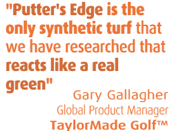

TaylorMade Golf + Putters Edge = Sweet Putting

Home Putting Solutions - Palm Beach is proud to offer Putters Edge synthetic putting green turf to Palm Beach County!
West Palm Beach backyard putting green turf, artificial golf turf, synthetic turf for sports and artificial putting turf is supplied by Home Putting Solutions - Palm Beach for West Palm Beach, Boca Raton, Jupiter, Palm Beach Gardens, Wellington in Florida.
Home Putting Solutions - Palm Beach
West Palm Beach, Florida
Your authorized Putters Edge synthetic putting turf and artificial grass turf dealer for putting greens, chipping mats, golf fringe, driving mats and artificial synthetic grass lawns in South Florida, Palm Beach County, Broward County, FL, FLA.
West Palm Beach Backyard putting green turf, artificial golf turf, synthetic turf for sports and artificial putting turf - supplied by Home Putting Solutions - Palm Beach for West Palm Beach, Boca Raton, Jupiter, Palm Beach Gardens, Wellington in Florida.
Synthetic turf and artificial turf dealer for putting greens, chipping mats, golf fringe, driving mats and artificial synthetic grass turf in South Florida, Palm Beach County, Broward County, FL, FLA are supplied by Home Putting Solutions - Palm Beach.
This is not standard backyard putting green turf - These synthetic golf greens, made with Putters Edge PAR Turf synthetic turf are Palm Beach County's best putting greens, period!
Putters Edge putting green turf is golf, golf tips, artificial turf, synthetic turf throughout cities like Palm Beach, Coral Springs, Pompano Beach, Deerfield Beach, Boca Raton, Jupiter, Palm Beach Gardens, Wellington, Manalapan, Boynton, Delray, West Palm Beach, Lake Worth, Palm Springs. Tough synthetic turf made for backyard putting greens, artificial turf installation of synthetic grass or even artificial turf for horse stalls. West Palm Beach putting green turf as well as Florida putting green turf with artificial turf tips about putting green construction, design and installation. In West Palm Beach, Home Putting Solutions - Palm Beach is your exclusive authorized Putters Edge PAR Turf dealer!
Putters Edge is TaylorMade™
for Rossa Putters
A news story from our corporate
putting green and artificial turf site
Dateline Dallas, Texas. TaylorMade Golf created Rossa putters, allowing Putters Edge to install green turf technology. Rossa putters hit golf balls and rolled true on putting greens made using PAR Turf.
This 8-holed monster green was an eye-catching centerpiece at the Rossa Media Event.
Putters Edge used PAR™ turf; the ultimate surface for live video of Rossa AGSI Technology.
The huge 1500 sq. ft. hourglass green got plenty of use!
(Dallas, Texas, - May 10, 2005)
You know you're doing something right when top TaylorMade™ Golf executives choose your proprietary turf to launch their fabulous new product line!
"Putters Edge™ is the only synthetic turf that we have researched that reacts like a real green", stated Gary Gallagher from the corporate office of TaylorMade in Carlsbad, California.
That's very important to TaylorMade Golf, because they are rolling out the Rossa/AGSI™ technology family of putters. Using a powerful media event in Dallas to tell the story, they needed the pure absolute roll of PAR™ turf to properly display their advanced system. The four new Rossa Putters are the Sebring 3 CGB, Lambeau 7 CGB, Suzuka CGB and Daytona CGB - all of which roll the ball forward at impact, unlike virtually all other putters.
To show this, they rigged a high-tech live video set-up which displayed in detail how the AGSI Groove Technology affected the roll of various putters. Only the best turf would do for these demonstartions! Putters Edge was commissioned to provide two 6'x15' practice strip greens for use with the ground-level video equipment. Another giant green (a base measurement of 30'x52') featuring 8 different cups was created to promote a hands-on experience for the attendees.
A Rossa Putters graphic showing how the grooves in AGSI Technology force the ball to roll forward immediately, rather than spin and skid in reverse like the action from common putters.
"The turf provided for our media event rolled a 9 1/2 stimp from every direction. We look forward to working with Putters Edge at the US Open and (other) events in the future..." remarked TaylorMade's Gallagher.
Despite the tight timeframes involved, a three-man Putters Edge crew installed the custom greens in one day - on time and on budget. "We are thrilled to establish this synergy with TaylorMade" Golf, exclaimed PE founder, Terry Elkin. "It's a treat whenever you get to work with the leaders in an industry, and we hope to continue to benefit the entire golf community through our combined efforts."
The employees of TaylorMade Golf will agree, when they see the green Elkin is sending them for use at their California headquarters.
Putters Edge™ Custom Greens
Back to palmbeachgreens.com
Thanks again to TaylorMade Golf for selecting Putters Edge putting green turf during their Rossa putter Dallas, Texas rollout! It's a great feeling when consumate golf technology pros like TaylorMade Golf say: The greens with the edge are made from Putters Edge turf.
Back to palmbeachgreens.com
Thanks again to TaylorMade Golf for selecting Putters Edge putting green turf during their Rossa putter Dallas, Texas rollout! It's a great feeling when consumate golf technology pros like TaylorMade Golf say: The greens with the edge are made from Putters Edge turf.